SAFEWAY_RACC
Introducció:
El projecte consisteix en el desenvolupament d’un videojoc interactiu centrat en la presa de decisions en situacions quotidianes amb risc potencial. En aquest cas, l’usuari assumirà el control d’un personatge que ha de tornar a casa a la nit després d’haver assistit a una festa, un context realista que pot comportar diferents perills si no es prenen les precaucions adequades. L’objectiu principal és conscienciar sobre l’exposició a riscos durant la mobilitat nocturna dels vianants, especialment en moments en què l’atenció pot estar reduïda o les condicions no són òptimes.
Això s’aconsegueix fent que el jugador hagi d’analitzar cada situació amb atenció i triar entre tres camins diferents, cadascun amb conseqüències pròpies. D’aquesta manera, es fomenta el pensament crític i la capacitat de prendre decisions informades, tot mostrant com petites eleccions poden tenir un impacte significatiu en la seguretat personal.
Com a grup, aquest projecte té com a objectiu principal contribuir a la millora de la seguretat en situacions quotidianes, especialment en contextos de mobilitat nocturna. Hem escollit desenvolupar un videojoc basat en la presa de decisions perquè considerem que aquest format permet als usuaris implicar-se activament en l’experiència i, sobretot, reflexionar de manera més profunda a partir dels seus propis errors i encerts. En lloc de limitar-se a rebre informació de forma passiva, els jugadors experimenten directament les conseqüències de les seves accions, fet que afavoreix un aprenentatge més significatiu i durador.
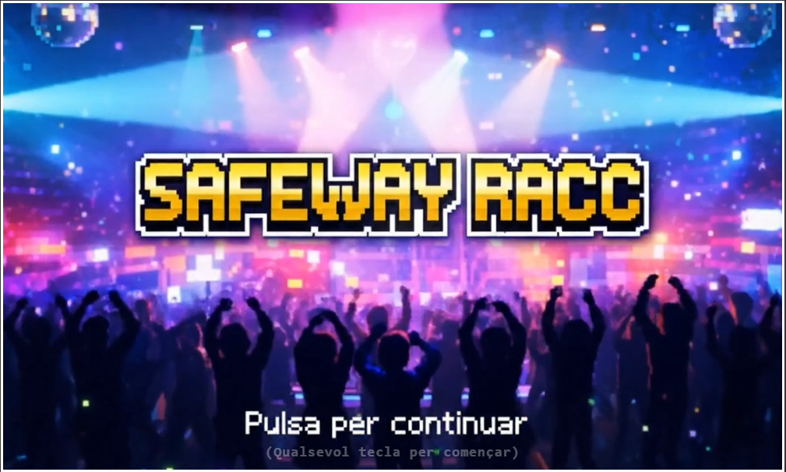
Història del joc:
INICI
El projecte consisteix en el desenvolupament d’un videojoc interactiu centrat en la presa de decisions en situacions quotidianes amb risc potencial. En aquest cas, l’usuari assumirà el control d’un personatge que ha de tornar a casa a la nit després d’haver assistit a una festa, un context realista que pot comportar diferents perills si no es prenen les precaucions adequades. L’objectiu principal és conscienciar sobre l’exposició a riscos durant la mobilitat nocturna dels vianants, especialment en moments en què l’atenció pot estar reduïda o les condicions no són òptimes.
Això s’aconsegueix fent que el jugador hagi d’analitzar cada situació amb atenció i triar entre tres camins diferents, cadascun amb conseqüències pròpies. D’aquesta manera, es fomenta el pensament crític i la capacitat de prendre decisions informades, tot mostrant com petites eleccions poden tenir un impacte significatiu en la seguretat personal.
Com a grup, aquest projecte té com a objectiu principal contribuir a la millora de la seguretat en situacions quotidianes, especialment en contextos de mobilitat nocturna. Hem escollit desenvolupar un videojoc basat en la presa de decisions perquè considerem que aquest format permet als usuaris implicar-se activament en l’experiència i, sobretot, reflexionar de manera més profunda a partir dels seus propis errors i encerts. En lloc de limitar-se a rebre informació de forma passiva, els jugadors experimenten directament les conseqüències de les seves accions, fet que afavoreix un aprenentatge més significatiu i durador.

Començarem al menú inicial i prenem qualsevol botó per iniciar el joc. El jugador principal apareix en una discoteca plena de gent ballant, escoltant música i gaudint de la nit. De sobte, el narrador apareix i ens explica qui és el personatge, què ha passat dins la discoteca i quines decisions hauran de prendre a partir d’ara. Per tornar a casa, el protagonista ha de prendre decisions crítiques que afectaran el seu futur, entre tres camins possibles.
Quan el persontage utilitza el cotxe i comenci a conduir, la visió comença a enfosquir-se i a borrossejar-de cada dos segons, creant una sensació de mareig i dificultant la conducció.
1) (Esquiva l’àvia) Si el protagonista decideix anar amb el cotxe més endavant, quan hagi d’esquivar la senyora, aconseguirà esquivar-la i continuarà conduint fins a casa, on podrà interactuar amb la porta per entrar a casa.
2) (No esquiva l’àvia) Si el protagonista decideix anar amb el cotxe més endavant, quan hagi d’esquivar la senyora, però no ho aconsegueixi esquivarà a la senyora i es xocarà amb un arbre mentre que el so de l’ambulància se senti de fons.
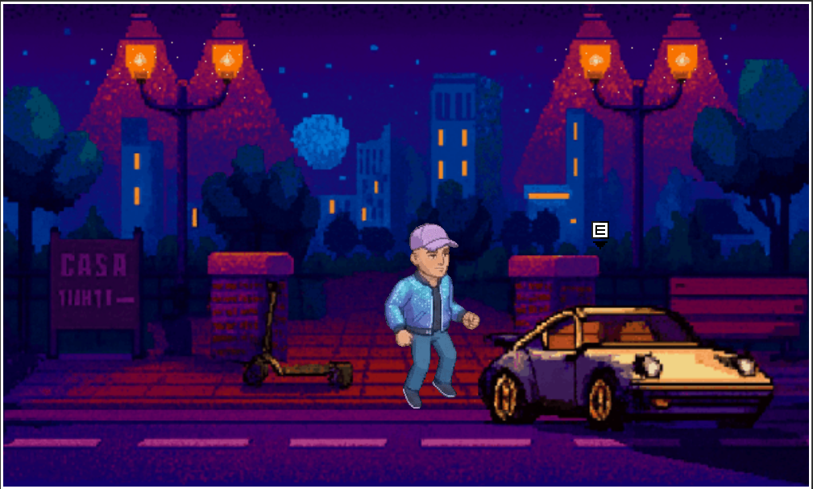
En aquest segon camí, agafaràs el patinet sense casc i recorreràs la carretera esquivant pedretes. Fes servir la tecla W per moure’t cap amunt i la tecla S per moure’t cap avall. Cada 4 segons, el patinet anirà més ràpidament, i si xoca contra una roca, sortirem disparats i ens sortirà una animació d’un policia multant-nos.
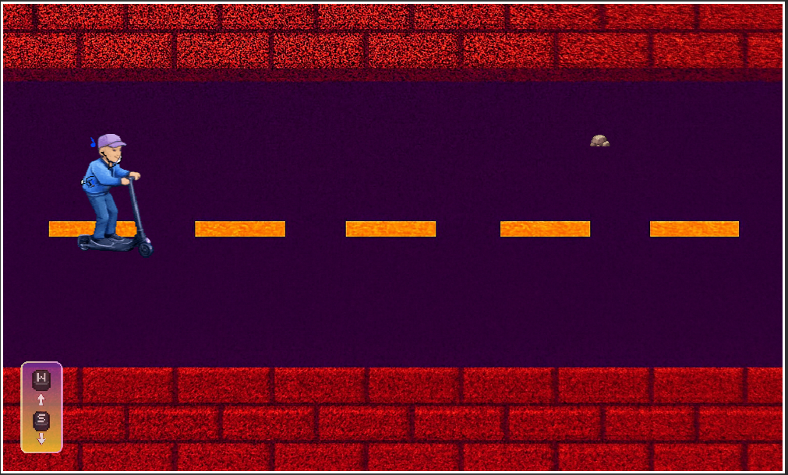
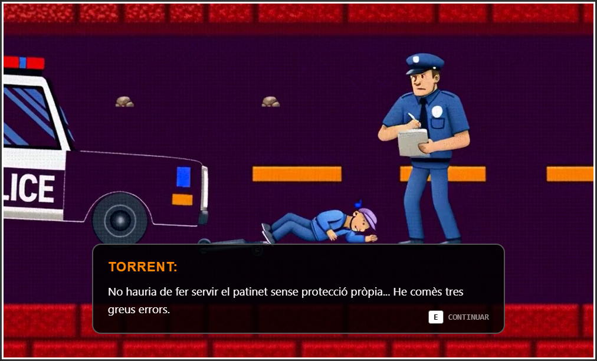
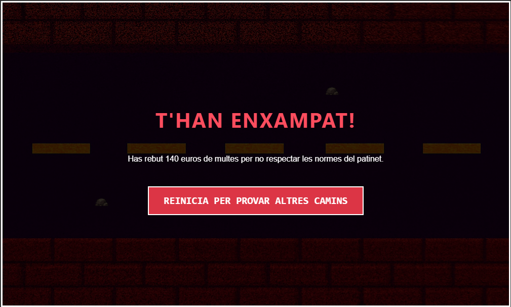
En el tercer camí, després d’escollir l’opció de caminar cap a casa, ens dirigirem cap a la dreta, on apareixerà una fletxa que ens indicarà que continuem avançant. Després de recórrer un tram més del camí, arribarem a l’estació d’autobusos, on la vorera està separada per un pas de vianants amb un semàfor en vermell. El narrador explicarà el que pensa Torrent, que observa que sembla que no hi hagi cotxes circulant. A sota de l’explicació del narrador, apareixerà una pregunta: creuràs amb el semàfor en vermell?
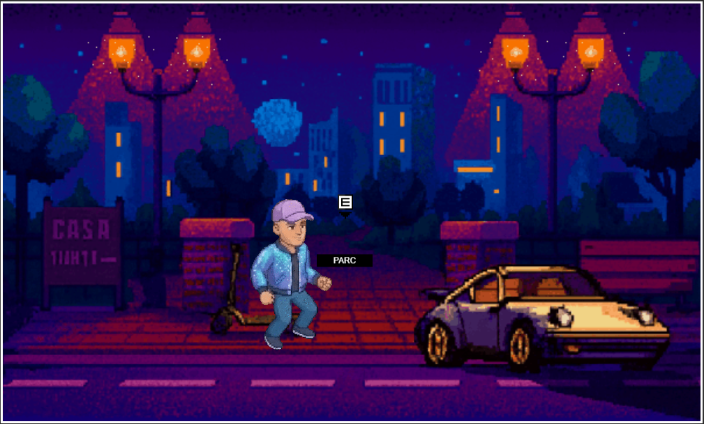
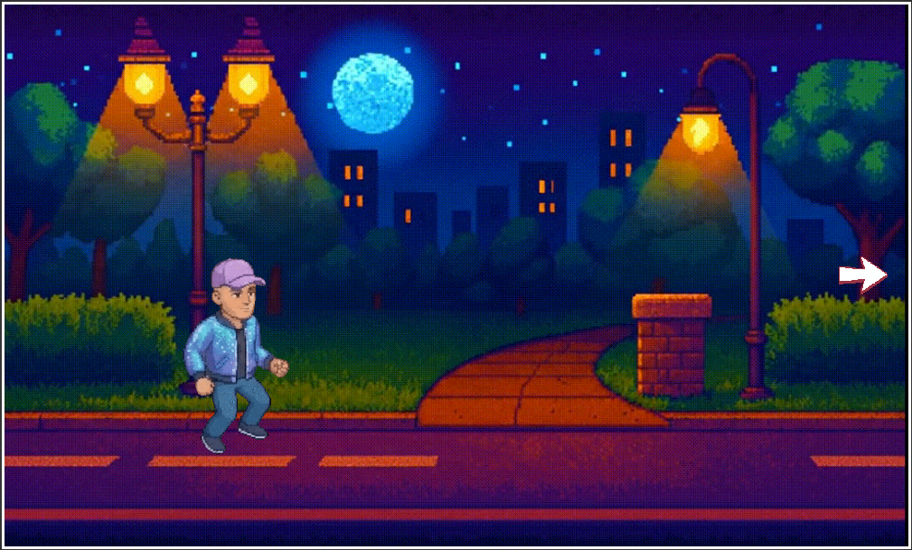
1) (Caminar en vermell) Si decideixes passar amb el semàfor en vermell, caminaràs amb el personatge pel pas de vianants. Mentre avances, un cotxe passarà a tota velocitat en vermell i farà sortir el personatge i el cotxe de la pantalla, fent la sensació que el personatge ha estat atropellat.
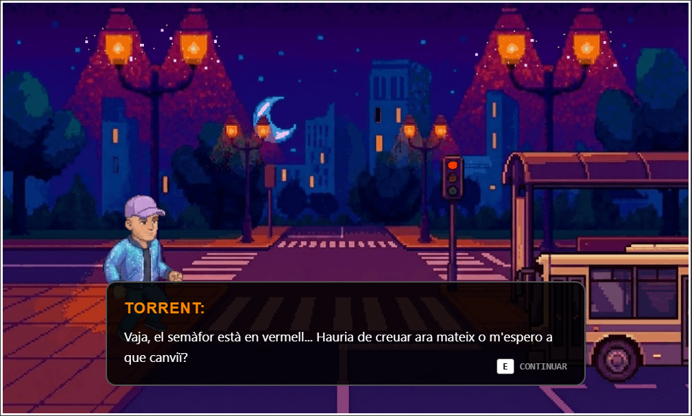
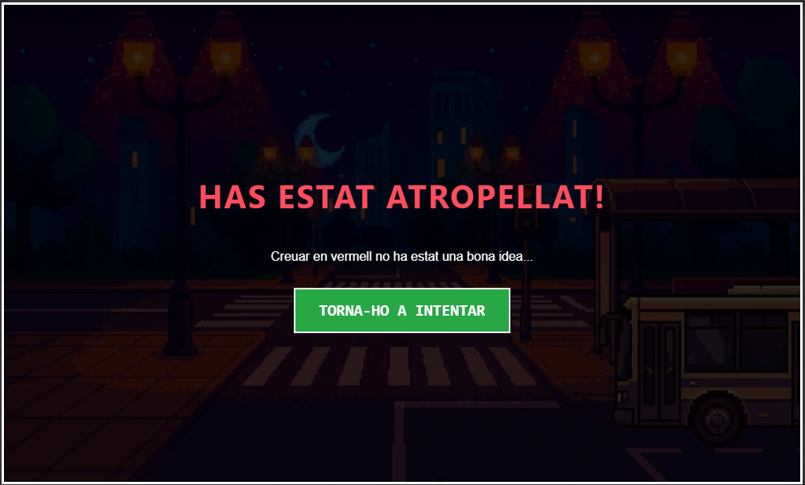
2) (Caminar en verd) Si decideixes travessar amb el semàfor en verd, veuràs com el cotxe passa a tota velocitat. Quan el semàfor s'ha posat en verd, caminaràs tranquil·lament i podràs interactuar amb l’autobús per anar a casa.
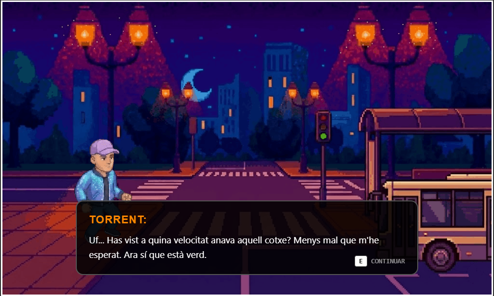
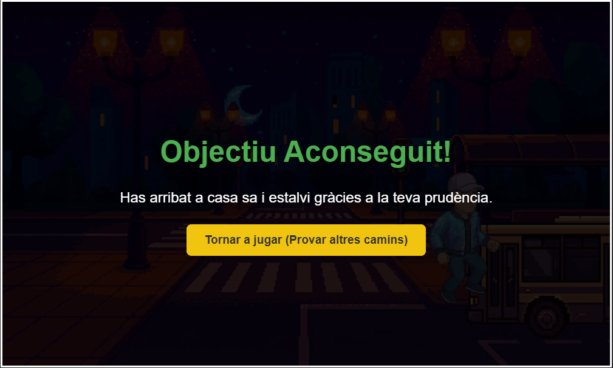
COM HO HEM FET
IDEES PRINCIPALS
Volíem que el jugador pugui prendre decisions i influeixen al final de la història per representar els perills de l’Alcohol en relació amb la seguretat viària. Per això hem decidit fer 3 camins diferents amb conseqüències diferents. Des del primer moment teníem clar que volíem tractar sobre tot el tema de l’alcohol, ja que solen haver-hi molts casos d’irresponsabilitat amb l’alcohol.
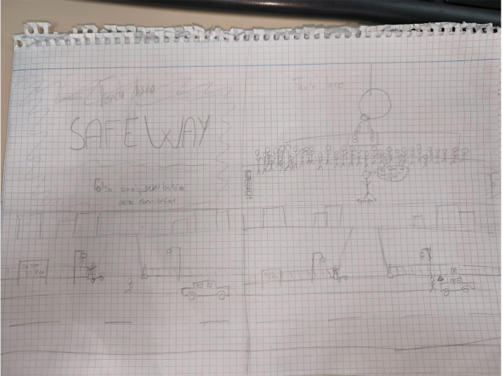
CONTEXT DEL JOC
Torrent (el personatge principal) està a una discoteca i ha begut molt, són les 5 de la matinada i ha de tornar a casa, té 3 opcions i el jugador haurà de decidir la millor opció, depenent de la seva decisió obtindrà un final o un altre, el jugador ha de prendre les decisions amb responsabilitat per treure el millor final.
PROCÉS
Primer de tot hem agafat la nostra idea i hem dibuixat en un paper les pantalles del joc, també en un altre paper hem fet l’estructura del joc en forma d'arbre posant les diferents opcions que pot triar el jugador. Amb l’ajuda de la IA hem creat als personatges, li hem demanat que ens doni diferents fotogrames per posar als personatges, aquests fotogrames els hem ajuntat per poder-los animar al Piskel que és una pàgina per poder fer les animacions dels personatges. Hem creat un repositori a GitHub compartit, per poder anar programant el joc i la pàgina web.
PAS A PAS (ELABORACIÓ A PAPER)
Per iniciar el desenvolupament del videojoc destinat a conscienciar els joves sobre la seguretat viària, el primer pas ha estat realitzar una planificació prèvia sobre paper. Aquesta fase inicial és essencial, ja que permet estructurar les idees, definir la narrativa i organitzar els escenaris del joc abans de començar la implementació digital. Treballar primer amb esbossos facilita posteriorment el desenvolupament tècnic, ja que proporciona una visió clara de la distribució dels espais, les mecàniques del joc i les possibles decisions del jugador.
En aquesta etapa inicial es van crear manualment els diferents escenaris que formen part del videojoc. Aquests escenaris es van dibuixar sobre paper en forma d’esborrany o croquis, amb l’objectiu de representar visualment el recorregut del jugador al llarg de la història. En els dibuixos es van incloure tots els espais principals del joc, així com la posició del protagonista i els elements interactius amb els quals el jugador podrà interactuar.
El joc comença amb el protagonista, Torrent, que es troba situat en el primer escenari: una discoteca. En aquesta primera escena, el narrador explica que Torrent ha passat una nit molt divertida de festa amb els seus amics, però que ja és hora de tornar a casa. Tanmateix, el protagonista es troba davant d’un problema important: ha begut massa alcohol i es troba en estat d’embriaguesa, fet que afectarà les seves decisions i la seva capacitat per tornar a casa de manera segura.
Quan el jugador intenta sortir de la discoteca per continuar amb la història, es troba amb tres opcions diferents que representen possibles maneres de tornar a casa. Aquestes opcions apareixen representades a través de diversos elements dins de l’escenari.
La primera opció és un cartell que indica la distància fins a casa de Torrent, especificant que es troba a uns 20 quilòmetres. Aquesta opció suggereix la possibilitat de tornar a casa utilitzant el transport públic o desplaçant-se a peu.
La segona opció és un patinet elèctric. En interactuar amb aquest element, el joc mostra que Torrente no porta casc, fet que implica un risc important per a la seva seguretat.
Finalment, la tercera opció és agafar el cotxe. No obstant això, el mateix protagonista reconeix que es troba massa begut per conduir amb seguretat, la qual cosa posa de manifest el perill de conduir sota els efectes de l’alcohol.
Cada una d’aquestes opcions dona lloc posteriorment a escenaris diferents dins del joc. En cadascun d’ells, el jugador haurà d’afrontar diverses situacions i prendre decisions que determinaran si Torrente aconsegueix arribar a casa sa i estalvi o si, per contra, pateix algun tipus de conseqüència negativa. L’objectiu principal és mostrar de manera interactiva els riscos associats a determinats comportaments relacionats amb la mobilitat i la seguretat viària.
OPCIONS PER ARRIBAR A CASA
Opció del cartell
Si el jugador decideix seleccionar l’opció del cartell, es produeix una transició que trasllada el protagonista a un nou escenari: un parc. En aquest espai, Torrent haurà d’avançar pel camí fins arribar al següent punt de la història.
Un cop travessat el parc, el protagonista arriba a una parada d’autobús situada al costat d’un semàfor de vianants. En aquest moment, el jugador es troba davant de dues possibles decisions que afectaran el desenllaç de la situació.
La primera opció consisteix a creuar el carrer amb el semàfor en vermell per arribar abans a casa. En aquest cas, Torrent pensa que no hi ha cap vehicle circulant i que pot creuar tranquil·lament sense cap risc. Tanmateix, quan el jugador intenta realitzar aquesta acció, un cotxe apareix inesperadament i atropella el protagonista, mostrant així les conseqüències de no respectar les normes de circulació. La segona opció és esperar que el semàfor es posi en verd abans de creuar el carrer. Si el jugador pren aquesta decisió, Torrent respectarà les normes de seguretat viària i podrà continuar el seu trajecte sense perill, aconseguint finalment tornar a casa de manera segura.
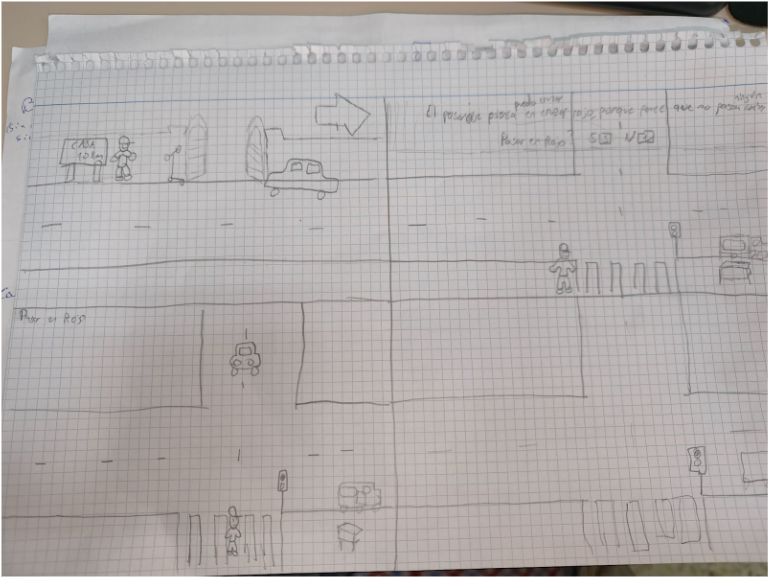
Opció del patinet elèctric
Quan el jugador intenta seleccionar l’opció del patinet elèctric, el protagonista adverteix inicialment que no porta casc, destacant que aquesta situació pot resultar perillosa.
Després d’escollir aquesta opció, es produeix una nova transició cap al següent escenari del joc, que consisteix en un minijoc. En aquesta fase, Torrent es desplaça sobre el patinet mentre escolta música amb uns auriculars, fet que redueix la seva capacitat d’atenció respecte al seu entorn. Durant el recorregut, el jugador haurà d’esquivar diferents roques que apareixen al camí per evitar que el protagonista caigui. A mesura que passa el temps, l’estat d’embriaguesa de Torrente provoca que es maregi i que la seva velocitat augmenti progressivament, fent que el control del patinet sigui cada vegada més difícil i que els obstacles siguin més complicats d’evitar.
Arriba un moment en què el jugador inevitablement acaba xocant contra una de les roques. Quan això succeeix, es reprodueix una animació en la qual apareix un agent de policia que sanciona Torrente per no complir la normativa de circulació corresponent, especialment per circular sense casc i sense les mesures de seguretat adequades.
En aquest escenari, el protagonista no aconsegueix arribar a casa sa i estalvi, mostrant així les possibles conseqüències de prendre decisions irresponsables relacionades amb la mobilitat i la seguretat viària.
Opció del cotxe
En seleccionar l’opció del cotxe el que farem primerament el protagonista Torrent apareixerà dins del cotxe. Després en un període de 10 segons amb intervals de 2 s, cada vegada es posarà més borrós la pantalla. Això fent que quan arribi a un punt de borrós màxim en la pantalla una senyora estarà passant per la carretera i es toparà amb el protagonista Torrent embriagat, veient borrós i veient que la seva vida no se sap si se salvarà o no.
En aquest moment quan la senyora i el protagonista estiguin a punt de xocar-se la pantalla es posarà de color negre/gris i s’executarà el minijoc per poder esquivar a la senyora. Bàsicament, aquest joc tracte sobre polsar una determinada vegada una tecla del teclat en un determinat temps per saber si podem esquivar a la senyora o no.
Si esquivem a la senyora, continuarem conduint i si no l'esquivarem igualment, però ens toparem amb un arbre i anirem directe a l’hospital.
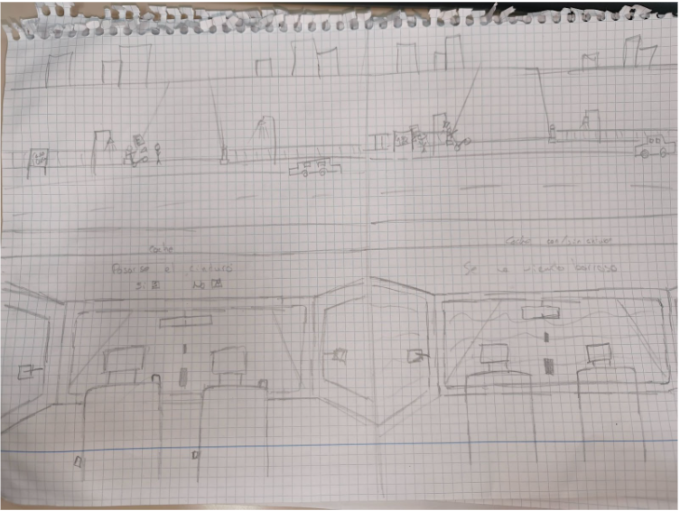
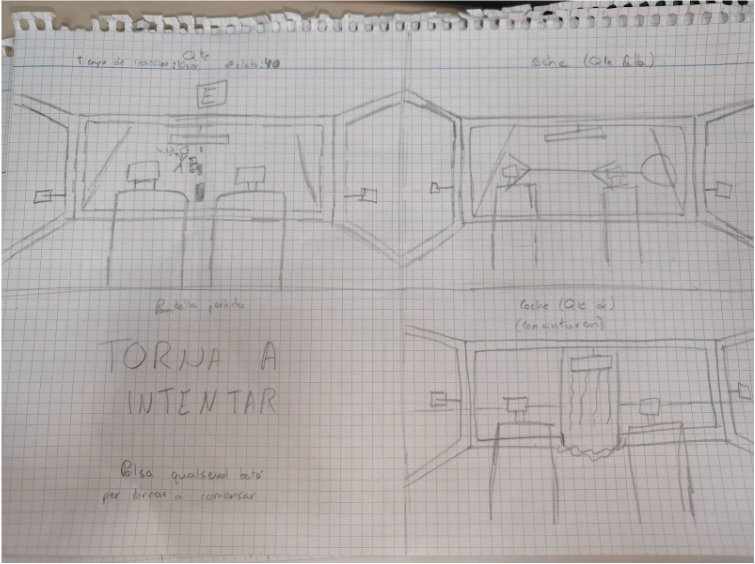
ELABORACIÓ DIGITAL
Pàgina web
Per començar, vam crear la pàgina web amb un estil professional. Al principi del projecte només vam crear aquesta base per saber com fer-ho. Hem utilitzat els recursos donats per l’empresa que realitza el concurs (RACC). Abans de fer la base del projecte, vam elegir la paleta de colors adequent que podria insertar-se bé amb l’empresa. Tot ha estat fet pero el nostre grup.
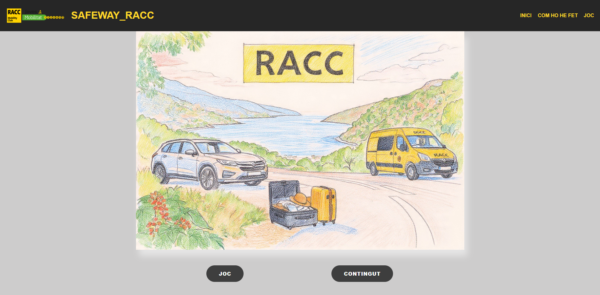
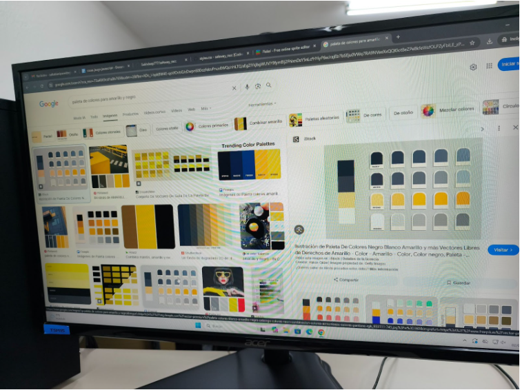
Disseny d'escenaris
En el disseny d’escenaris, el contingut o la forma del nostre joc està pensat tot per píxel-art, per això, hem utilitzat les eines com IA per generar els continguts que volem sobre els escenaris o les imatges gratuïts d’internet. També hem utilitzat piskel per dissenyar algunes coses com edificis, escenaris o materials.
Després, hem utilitzat inteligencia artificial per generar vídeos sobre alguns escenaris que volem del nostre projecte, perquè està molt difícil de fet manualment.
Eines utilitzades
Durant el desenvolupament del projecte s’han utilitzat diverses eines digitals que han permès millorar tant la part visual com la tècnica del joc.
En primer lloc, s’ha fet ús d’una plataforma de cerca d’imatges per obtenir referències visuals com il·lustracions, animacions i escenaris. Aquest recurs ha estat clau per definir l’aparença del personatge principal, així com per dissenyar els diferents entorns del joc (com espais urbans o zones d’oci) i elements interactius com vehicles. Gràcies a aquesta eina, s’ha pogut construir una base estètica coherent i atractiva, millorant la immersió de l’usuari.
A més, s’ha utilitzat una eina d’intel·ligència artificial per generar seqüències d’imatges que posteriorment s’han convertit en animacions. Aquesta tecnologia ha facilitat la creació de fotogrames de manera ràpida i sense limitacions, permetent desenvolupar animacions fluides i detallades. Com a resultat, s’ha aconseguit optimitzar el temps de producció i mantenir una qualitat visual constant.
També s’han emprat eines específiques per eliminar el fons de les imatges i dels elements animats. Això ha permès integrar els personatges i objectes en diferents escenaris sense interferències visuals, obtenint un resultat més net, professional i adaptable a diverses situacions dins del joc.
Pel que fa a les transicions visuals, s’ha utilitzat una altra solució basada en intel·ligència artificial per generar vídeos, contribuint a una experiència més dinàmica i fluida per a l’usuari.
En l’àmbit del desenvolupament tècnic, el projecte s’ha creat mitjançant un entorn de programació, utilitzant llenguatges estàndard per al desenvolupament web. D’una banda, s’ha definit l’estructura de les pàgines; d’altra banda, s’ha treballat l’estètica visual mitjançant estils i disseny; i finalment, s’ha implementat la lògica i les interaccions del joc, permetent gestionar esdeveniments, moviments i accions de l’usuari. La combinació d’aquests elements ha donat lloc a un producte funcional, interactiu i visualment atractiu.
Per altra banda, s’ha utilitzat una plataforma de control de versions i allotjament al núvol per gestionar el projecte. Aquesta eina ha facilitat l’organització dels arxius, el seguiment dels canvis i la possibilitat de continuar el desenvolupament en qualsevol moment, garantint la seguretat de la informació.
Finalment, s’han utilitzat aplicacions especialitzades en la creació i edició d’animacions i imatges, que han permès importar, organitzar i adaptar els fotogrames generats prèviament. Això ha contribuït a simplificar el procés de creació d’animacions i a millorar el resultat final. A més, també s’ha fet ús d’una eina d’assistència basada en intel·ligència artificial per dur a terme la pluja d’idees, ajudant a estructurar el projecte, definir objectius i establir les bases del disseny.